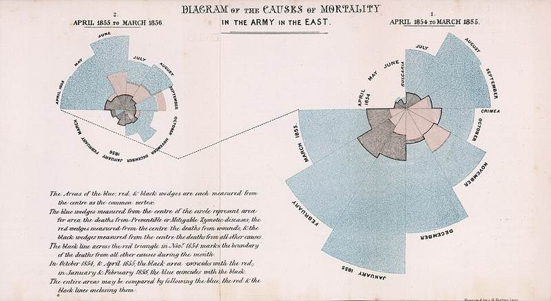

HealthStory AI
Your own health story, kept as your own record.
Early-stage research. Not available yet.

Most of us tell our health story again and again, to one clinician after another, and each retelling loses some of the detail, the order and our own explanation. The record that does exist usually belongs to the clinic, not to us.
HealthStory AI is a different starting point. You tell your story in your own words and in your own order. It is kept as a structured record that is yours: a graph of conditions, symptoms, medicines, appointments and life events, with time running through it. You can correct it, export it, and give it back in whatever form someone needs, such as a short summary for a GP or a plain account for family.
It is meant to run on your own device, with no subscription and no need for a clinician to approve it.
- Solid: written down when it happened.
- Dashed: suggested by the app. You decide.
- Dotted: remembered later, and not sure.
HealthStory AI
The record itself, drawn as swimlanes in time: body, care and readings side by side, so you can see what happened around what. Every entry carries its own mark for how settled it is, so a guess never looks like a fact.
BodyScan
The body-chart part. You are guided from toe to head, mark where something hurts, say what it feels like and for how long, and come back later to compare. It makes a note you can hand to your GP. It does not diagnose or triage.

This page is a draft of the idea. HealthStory AI is an early research product and nothing is available to use yet. The look, the name and these words may change.